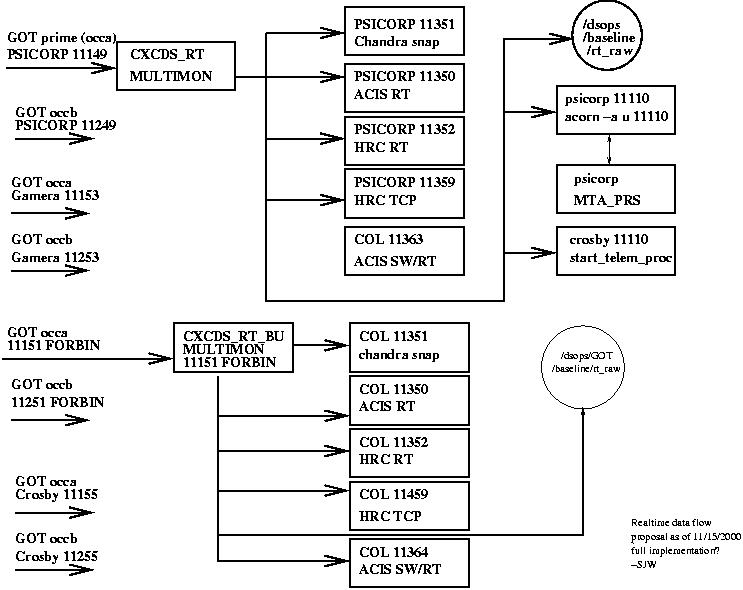

Solution: Assure at least 2 independant pathways with independant data sources, hardware and web servers. Have watcher software installed to
Side issue: 1 account can only run multimon once.
Outline - see figure.

1- 4 feeds to rhodes (2 RT/ 2 ASVT) need to be disributed among more
machines.
Currently (2/16/2001)
RT ASVT/SIM
PSICORP 11149 PSICORP 11249
Gamera 11153 Gamera 11253
FORBIN 11151 FORBIN 11251
CROSBY 11155 CROSBY 11255
DS OPS Realtime Guide
1 account runs on gamera prime (CXCDS_RT)
The account runs all the former system run by ascdsops
multimon_gamera> clients
No. Protocol IP Address Port Description State
--- -------- ---------- ---- ----------- -----
1 UDP 131.142.52.214 11111 CFA246 (Dong-Woo Kim) On
2 UDP 131.142.52.110 11150 Paul's machine nesvig Off
3 UDP 131.142.52.102 11150 Mike's machine tribble Off
6 UDP 131.142.42.104 11150 Dan's machine cfa259 Off
7 UDP 131.142.56.241 11149 SOT Lead on colossus On
8 UDP 131.142.56.241 11150 ACIS PMON On
9 UDP 131.142.56.241 11151 extra colossus hookup On
10 UDP 131.142.56.213 11111 gamera (DSOPS) On
11 UDP 131.142.56.241 11363 colossus PGF On
12 UDP 131.142.42.185 11111 Shanil's xcanuck On
13 UDP 131.142.56.253 11120 Rhodes MTA On
14 UDP 131.142.56.253 11112 Chandra snapshot On
15 UDP 131.142.56.253 11122 Chandra snapshot Off
16 UDP 131.142.56.253 11121 Chandra snapshot On
17 UDP 131.142.56.253 11350 acisdude-ACIS rhodes On
18 UDP 131.142.56.253 11351 rac Snapshot rhodes On
19 UDP 131.142.56.253 11352 acisdude-HRC rhodes On
20 UDP 131.142.56.174 11112 Ionize home On
21 UDP 131.142.56.213 11100 GAMERA acorn with alarms On
22 UDP 131.142.42.185 11113 xcanuck redundant On
23 UDP 131.142.56.161 12001 ringo L0 On
24 UDP 131.142.56.161 12002 ringo L0 On
25 UDP 131.142.56.161 12003 ringo L0 On
26 UDP 131.142.56.161 12004 ringo L0 On
27 UDP 131.142.56.161 12005 ringo L0 On
28 UDP 131.142.56.161 12006 ringo L0 On
29 UDP 131.142.56.161 12007 ringo L0 On
30 UDP 131.142.56.161 12008 ringo L0 On
31 UDP 131.142.56.232 11111 crosby acorn On
32 UDP 131.142.184.154 15120 HRC Jon C. On
33 UDP 131.142.83.51 15202 Jon HRC11 Off
34 UDP 131.142.56.174 11147 ionize On
35 UDP 131.142.56.232 14567 On crosby craig On
36 UDP 131.142.56.80 13001 watchdog on forbin On
37 UDP 131.142.88.11 15201 HRC11 On
36 UDP 131.142.52.106 11150 Tom's machine baffin On
37 UDP 131.142.56.223 11150 Tom's machine lala On
1 account runs on forbin prime (CXCDS_RT_BU)
This account runs redundant and non critical systems:
multimon_cxcds_BU> clients
No. Protocol IP Address Port Description State
--- -------- ---------- ---- ----------- -----
1 UDP 131.142.56.241 11351 Col. Chandra Snap BU On
2 UDP 131.142.56.241 11350 Col. ACIS/HW BU On
3 UDP 131.142.56.241 11352 Col. HRC RT BU On
4 UDP 131.142.56.241 11364 Col. ACIS/SW BU On
5 UDP 131.142.56.241 11111 Colossus Reserve On
6 UDP 131.142.56.241 11363 ACIS RT/SW (Prime) Off
7 UDP 131.142.42.185 11112 xcanuck (redundant) On
8 UDP 131.142.56.241 11365 ACIS RT/SW (BU) On
9 UDP 131.142.56.174 11347 Ionize On
10 UDP 131.142.56.80 11110 Forbin test On
11 UDP 131.142.56.241 11125 Colossus MCD test On
12 UDP 131.142.56.253 11113 rhodes mta snapshot On
13 UDP 131.142.83.51 15201 Jon HRC11 On
14 UDP 131.142.184.154 15199 HRC Jon C. On
15 UDP 131.142.56.102 11111 maximus acorn On
16 UDP 131.142.56.232 13002 watchdog on crosby On
17 UDP 131.142.184.13 14000 wyle1 mcd Off
18 UDP 131.142.184.13 14002 wyle2 mcd Off
19 UDP 131.142.56.101 11111 baggins On
20 UDP 131.142.56.80 13002 Forbin Watchdog On
2- Run critical RT-elements on 2 platforms (requires 2 accounts)
Created cxcds_rt & cxcds_rt_bu to handle RT ops.
New procedures in place to run multimon remotely
3- enable watcher software to fail over to non-DS.release
versions. If DS.release fails and notify responsible
operators.
This was initially meant to be the run_task.pl software
in /home/cxcds_rt(_bu)/MAINTAINANCE. This does run
on cxcds_rt_bu. Points to local versions of acorn and
multimon ~/MULTIMON ~/ACORN for autorestart, not for
primary use.
ISSUE:Unclear on watcher status on cxcds_rt
ISSUE:As run_task.pl is requires the hardware to be up. We
should also have watcher/notifier software to assue
the psicorp and forbin are up (checks once per 5 minutes).
4- distrubution of data goes to systems on either side of the
HEAD/ops LAN (prime=HEAD) to deal with failure of
either subsystem. SOT home pages points to functional mirror.
critical Web pages
on head LAN
Chandra Snapshot GOT/CXCconduit proc. & data store
State of Chandra (SOH) gamera------------------->rhodes
ACIS - Hardware gamera------------------->rhodes
ACIS -Software gamera------------------->colossus
HRC gamera------------------->rhodes
ACE rhodes
Other radiation information rhodes+remote hosts
*this has been identified as a weak link and is being picked up as
part of a general critical software condensation project initiated by
the flight director.
on ops LAN
REALTIME DATA
Chandra Snapshot Forbin -----------------> colossus
State of Chandra(SOH) Forbin -----------------> colossus
ACIS (HW) Forbin -----------------> colossus
HRC Forbin -----------------> colossus
ACE colossus
GOES 10 colossus